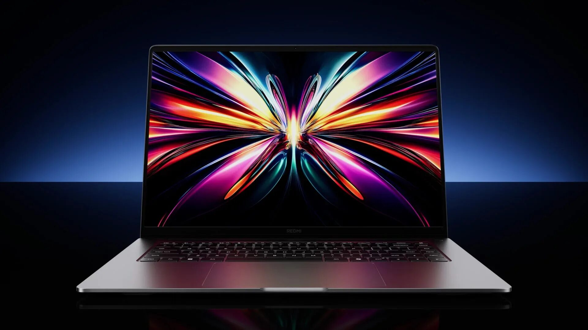

RedmiBook Pro 16 2025
Краткое описание
Ноутбук обладает сверхтонким корпусом 15,9 мм и небольшим весом 1,88 кг, а также питается от аккумулятора 99 Втч, что делает его идеальным для работы не только из дома, но и в дороге. Процессор Intel Core Ultra обеспечивает флагманское быстродействие и быструю работу нейросетей. Устройство оснащено HD-камерой, микрофоном и динамиками. LCD-дисплей имеет точную цветопередачу и высокое разрешение. Частота обновления 165 Гц делает каждое действие плавным. Поддержка технологий Dolby улучшает качество звука и видео. Эффективная система охлаждения не допускает перегрева.
Характеристики
Подробное описание
Redmi Book Pro 16 оснащён 16-дюймовым IPS-экраном с разрешением 3072x1920 пикселей, яркостью до 500 нит (VESA DisplayHDR 400) и частотой обновления 165 Гц. Он подходит для работы с графикой благодаря показателю ΔE~0,33 (100% DCI-P3) и сертифицирован TЬV Rheinland благодаря отсутствию мерцания и вредного синего света. За производительность ноутбука отвечает процессор Intel Core Ultra 7 255H. Объём оперативной памяти стандарта LPDDR5X-8400 составляет 32 ГБ, накопителя — 1 ТБ (SSD M.2, PCIe 4.0). Аккумулятор ёмкостью есть 99 Втч поддерживает быструю 140-ваттную зарядку. Особенностью модели стал выделенный чип Xiaomi AIPC. Утверждается, что он помогает ноутбуку «разогнаться» до 96 TOPS при ИИ-вычислениях. Этот компонент также нужен для работы виртуального ассистента XiaoAI, который умеет отвечать на вопросы, распознавать голосовые команды и изображения. За отвод тепла от аппаратной платформы отвечает система охлаждения с двумя вентиляторами Hurricane Cooling (до 6400 об/мин) и тремя тепловыми трубками. Набор интерфейсов ноутбука включает разъёмы Thunderbolt 4, USB Type-C, HDMI 2.1, два USB 3.2 Gen 1 Type-A, а также модули Wi-Fi 6 и Bluetooth 5.2.
Все права защищены © 2026